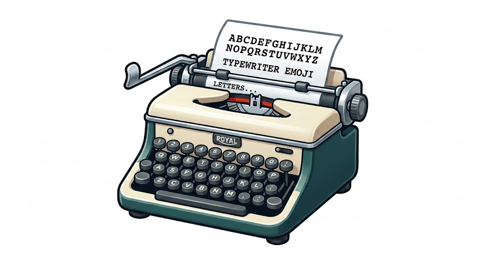

<!DOCTYPE html>
<html lang="ko">
<head>
<meta charset="UTF-8">
<meta name="viewport" content="width=device-width, initial-scale=1.0">
<title>Typewriter</title>
<link rel="preconnect" href="https://fonts.googleapis.com">
<link rel="preconnect" href="https://fonts.gstatic.com" crossorigin>
<link href="https://fonts.googleapis.com/css2?family=Courier+Prime&family=Noto+Sans+KR:wght@300;400;500&display=swap" rel="stylesheet">
<link rel="stylesheet" href="https://cdn.jsdelivr.net/npm/@the-street/chosun-century/index.css" />
<style>
    /* === 전체 레이아웃 === */
    body, html {
        margin: 0; padding: 0; width: 100%; height: 100%;
        background-color: #F9F8F6;
        font-family: 'Noto Sans KR', sans-serif;
        display: flex; overflow: hidden; color: #333;
    }

    /* === 사이드바 === */
    .sidebar {
        width: 320px;
        background: #FFFFFF;
        border-right: 1px solid #E5E5E5;
        display: flex; flex-direction: column;
        padding: 30px 20px; box-sizing: border-box;
        z-index: 100;
    }

    .sidebar h2 {
        font-size: 1.1rem; font-weight: 500; margin-top: 0; 
        color: #888; letter-spacing: 1px; text-transform: uppercase;
        margin-bottom: 25px;
    }

    .menu-btn {
        background: #FFFFFF; color: #555;
        border: 1px solid #DDD; padding: 12px; border-radius: 6px;
        margin-bottom: 10px; cursor: pointer;
        font-family: inherit; font-size: 0.95rem; font-weight: 400;
        transition: all 0.2s ease;
    }
    .menu-btn:hover { background: #F5F5F5; border-color: #CCC; }
    
    .menu-btn.primary { 
        background: #2C2B29; color: #FFF; border: none; 
        font-weight: 500;
    }
    .menu-btn.primary:hover { background: #4A4A4A; }

    .note-list { flex: 1; overflow-y: auto; margin-top: 20px; }
    .note-list::-webkit-scrollbar { width: 4px; }
    .note-list::-webkit-scrollbar-thumb { background: #EEE; border-radius: 4px; }

    .note-item {
        padding: 15px; margin-bottom: 8px; cursor: pointer; 
        border-radius: 8px; transition: background 0.2s;
    }
    .note-item:hover { background: #F9F9F9; }
    .note-item strong { display: block; font-size: 0.95rem; font-weight: 500; color: #333; margin-bottom: 4px; }
    .note-item .note-date { font-size: 0.75rem; color: #AAA; }
    
    .note-actions { display: flex; justify-content: flex-end; margin-top: 8px; }
    .delete-btn { 
        background: none; border: none; color: #D9534F; 
        cursor: pointer; font-size: 0.75rem; padding: 4px 8px; 
        border-radius: 4px; opacity: 0.6; transition: 0.2s;
    }
    .delete-btn:hover { opacity: 1; background: rgba(217, 83, 79, 0.1); }

    /* === 타자기 데코 이미지 === */
    .typewriter-deco {
        width: 100%;
        margin-top: auto; /* 플렉스 박스에서 요소를 제일 아래로 밀어냅니다 */
        padding-top: 20px;
        opacity: 0.85; /* 너무 튀지 않게 약간 투명하게 */
        mix-blend-mode: multiply; /* 이미지의 흰 배경을 사이드바 배경과 자연스럽게 섞어줍니다 */
        pointer-events: none; /* 클릭 방지 */
    }

    /* === 메인 타이핑 영역 === */
    .workspace {
        flex: 1; display: flex; justify-content: center; align-items: center;
        position: relative; background: #F9F8F6;
    }

    /* === 종이 컨테이너 === */
    .paper-wrapper {
        width: 850px; height: 90vh;
        background-color: #FFFFFF;
        box-shadow: 0 10px 40px rgba(0, 0, 0, 0.04);
        border: 1px solid #EFEFEF;
        border-radius: 8px;
        position: relative; overflow: hidden;
    }

    .strike-impact {
        position: absolute; top: 0; left: 0; right: 0; bottom: 0;
        background: rgba(0,0,0,0.01);
        opacity: 0; pointer-events: none; z-index: 5;
    }

    /* === 입력부 컨테이너 (커서 추적을 위한 래퍼) === */
    .input-container {
        position: relative; width: 100%; height: 100%;
    }

    /* === 텍스트 입력부 === */
    textarea, .shadow-tracker {
        width: 100%; height: 100%;
        padding: 80px 100px; box-sizing: border-box;
        /* 조선100년체 적용 */
        font-family: 'ChosunCentury', serif; 
        font-size: 20px; /* 폰트에 맞춰 살짝 키움 */
        line-height: 2.2;
    }

    textarea {
        background: transparent; border: none; outline: none; resize: none;
        color: #2C2B29;
        caret-color: transparent; /* 기본 깜빡이는 커서 숨김 */
        z-index: 10; position: absolute; top: 0; left: 0;
    }
    textarea::placeholder { color: #CCC; }
    textarea::-webkit-scrollbar { display: none; }

    /* === 보이지 않는 그림자 텍스트 (위치 추적용) === */
    .shadow-tracker {
        position: absolute; top: 0; left: 0;
        color: transparent; white-space: pre-wrap; word-wrap: break-word;
        pointer-events: none; z-index: 1;
        overflow: hidden;
    }

    /* === 타자기 헤더 (시각적 커서) === */
    .typewriter-header {
        position: absolute;
        width: 16px; height: 4px;
        background-color: #D9534F; /* 레트로한 빨간 잉크 가이드 느낌 */
        border-radius: 1px;
        box-shadow: 0 2px 4px rgba(0,0,0,0.15);
        /* CSS 변수를 사용하여 위치 지정 */
        transform: translate(var(--x, 0), var(--y, 0));
        transition: transform 0.08s cubic-bezier(0.2, 0, 0, 1);
        z-index: 5; pointer-events: none;
        top: 0; left: 0;
        opacity: 0;
    }

    /* 입력 시 타격 모션 - 변수를 유지한 채 Y축만 튕기도록 수정 */
    .strike-anim {
        animation: strikeMotion 0.1s ease-out;
    }
    @keyframes strikeMotion {
        0% { transform: translate(var(--x, 0), calc(var(--y, 0) - 3px)) scale(1.1); background-color: #2C2B29; }
        100% { transform: translate(var(--x, 0), var(--y, 0)) scale(1); background-color: #D9534F; }
    }
</style>
</head>
<body>

<aside class="sidebar">
    <h2>Documents</h2>
    <button class="menu-btn primary" onclick="saveNote()">문서 저장하기</button>
    <button class="menu-btn" onclick="createNewNote()">+ 새 문서 작성</button>
    <div class="note-list" id="noteList"></div>
    
    
</aside>

<main class="workspace">
    <div class="paper-wrapper">
        <div class="strike-impact" id="impactEffect"></div>
        <div class="input-container">
            <div id="shadowTracker" class="shadow-tracker"></div>
            <div id="typewriterHeader" class="typewriter-header"></div>
            <textarea id="typewriter" placeholder="여기에 글을 작성해 보세요..." spellcheck="false" autofocus></textarea>
        </div>
    </div>
</main>

<script>
    const textarea = document.getElementById('typewriter');
    const shadowTracker = document.getElementById('shadowTracker');
    const typewriterHeader = document.getElementById('typewriterHeader');
    const impactEffect = document.getElementById('impactEffect');
    const noteListEl = document.getElementById('noteList');
    
    let currentNoteId = null;

    // --- 시각적 타격 효과 (화면 미세 흔들림) ---
    function triggerImpact() {
        impactEffect.animate([
            { opacity: 1, transform: 'scale(0.998)' },
            { opacity: 0, transform: 'scale(1)' }
        ], {
            duration: 80, easing: 'ease-out'
        });
    }

    // --- 타자기 헤더(커서) 위치 추적 로직 ---
    function updateHeaderPosition() {
        const text = textarea.value;
        const pos = textarea.selectionStart;
        
        // 커서 이전까지의 텍스트를 추출
        const textBefore = text.substring(0, pos);
        
        // HTML 요소로 안전하게 렌더링되도록 공백과 줄바꿈 치환
        let htmlBefore = textBefore
            .replace(/&/g, '&amp;')
            .replace(/</g, '&lt;')
            .replace(/>/g, '&gt;')
            .replace(/\n/g, '<br>')
            .replace(/\s/g, '&nbsp;');
            
        // 추적용 span 태그 삽입
        shadowTracker.innerHTML = htmlBefore + '<span id="caretSpan">|</span>';
        
        const caretSpan = document.getElementById('caretSpan');
        if (caretSpan) {
            // textarea의 스크롤에 맞게 shadow 영역도 스크롤 동기화
            shadowTracker.scrollTop = textarea.scrollTop;
            
            const x = caretSpan.offsetLeft;
            const y = caretSpan.offsetTop - textarea.scrollTop;
            
            // 헤더가 보이도록 활성화
            typewriterHeader.style.opacity = '1';
            
            // CSS 변수로 좌표 전달
            typewriterHeader.style.setProperty('--x', `${x}px`);
            typewriterHeader.style.setProperty('--y', `${y + 36}px`); // 조선100년체에 맞게 조금 더 아래로 조정
            
            // 입력 시 헤더가 타격하는 애니메이션 클래스 뗐다 붙이기
            typewriterHeader.classList.remove('strike-anim');
            void typewriterHeader.offsetWidth; // 리플로우 강제 발생 (애니메이션 재시작)
            typewriterHeader.classList.add('strike-anim');
        }
    }

    // 입력, 클릭, 방향키 이동, 스크롤 등 커서 위치가 바뀔 수 있는 모든 이벤트에 연결
    textarea.addEventListener('input', () => {
        updateHeaderPosition();
        triggerImpact();
    });
    textarea.addEventListener('keyup', updateHeaderPosition);
    textarea.addEventListener('click', updateHeaderPosition);
    textarea.addEventListener('scroll', updateHeaderPosition);
    
    // 포커스를 잃으면 헤더 숨기기
    textarea.addEventListener('blur', () => { typewriterHeader.style.opacity = '0'; });
    textarea.addEventListener('focus', updateHeaderPosition);

    // --- 문서 저장/관리 기능 (기존과 동일) ---
    function getNotes() {
        return JSON.parse(localStorage.getItem('tw_notes_light') || '[]');
    }

    function saveNotes(notes) {
        localStorage.setItem('tw_notes_light', JSON.stringify(notes));
    }

    function renderNoteList() {
        const notes = getNotes();
        noteListEl.innerHTML = '';
        
        if(notes.length === 0) {
            noteListEl.innerHTML = '<div style="color:#BBB; text-align:center; margin-top:30px; font-size: 0.9rem;">저장된 문서가 없습니다.</div>';
            return;
        }

        notes.forEach(note => {
            const div = document.createElement('div');
            div.className = 'note-item';
            const title = note.content.split('\n')[0].substring(0, 15) || '제목 없는 문서';
            
            div.innerHTML = `
                <div onclick="loadNote(${note.id})">
                    <strong>${title}...</strong>
                    <div class="note-date">${new Date(note.timestamp).toLocaleString()}</div>
                </div>
                <div class="note-actions">
                    <button class="delete-btn" onclick="deleteNote(event, ${note.id})">삭제</button>
                </div>
            `;
            noteListEl.appendChild(div);
        });
    }

    function createNewNote() {
        currentNoteId = null;
        textarea.value = '';
        textarea.focus();
        updateHeaderPosition();
    }

    function saveNote() {
        const content = textarea.value.trim();
        if (!content) {
            alert('내용을 입력해주세요.');
            return;
        }

        let notes = getNotes();
        if (currentNoteId) {
            const index = notes.findIndex(n => n.id === currentNoteId);
            if (index > -1) {
                notes[index].content = content;
                notes[index].timestamp = Date.now();
            }
        } else {
            const newNote = {
                id: Date.now(),
                content: content,
                timestamp: Date.now()
            };
            notes.unshift(newNote);
            currentNoteId = newNote.id;
        }

        saveNotes(notes);
        renderNoteList();
        
        impactEffect.style.background = 'rgba(46, 125, 50, 0.05)';
        triggerImpact();
        setTimeout(() => { impactEffect.style.background = 'rgba(0,0,0,0.01)'; }, 150);
    }

    function loadNote(id) {
        const notes = getNotes();
        const note = notes.find(n => n.id === id);
        if (note) {
            currentNoteId = note.id;
            textarea.value = note.content;
            textarea.focus();
            updateHeaderPosition();
        }
    }

    function deleteNote(event, id) {
        event.stopPropagation();
        if(confirm('이 문서를 영구히 삭제하시겠습니까?')) {
            let notes = getNotes();
            notes = notes.filter(n => n.id !== id);
            saveNotes(notes);
            
            if (currentNoteId === id) { createNewNote(); }
            renderNoteList();
        }
    }

    renderNoteList();
</script>
</body>
</html>